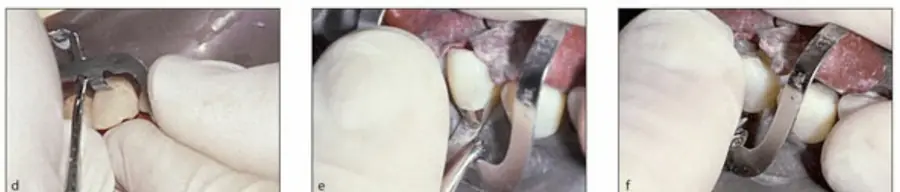

درس چهارم: مرور برداشتن رابردم، پارگی و خطاهای رایج
نسخه استخراجشده؛ ترجمه یا تأیید علمی انجام نشده است. وضعیت: captured
قدم 1 · theory
جمعبندی برداشتن، پارگی و خطاها
برداشتن: شستوشو با HVE و بیرون آوردن ساکشن بزاق؛ لیگاتورها؛ بریدن سپتومها (ورق روی دو لنگر بماند)؛ کلمپ؛ ورق و فریم با هم؛ پاک کردن لبها؛ شستوشو و ماساژ لثه؛ وارسی ورق جدا از فریم.
پارگی: ورق کهنه یا نازک، سوراخ کوچک یا نامنظم، کشش زیاد، تماس زبر، فرز، و کلمپ روی ورق سفتکشیده. پارگی کوچک را با وصلهای که حدود ۱ سانتیمتر حاشیه دارد و چسب سیانوآکریلات ببند؛ برای پارگی بزرگ ورق تازه یا ورق دوم بگذار.
خطاها: سه پیامد دارند: کنترل ناکافی رطوبت، دید و دسترسی کمتر، و آسیب به بیمار. کلمپ نامناسب، آسیب لثه، نوک تیز کلمپ 212 و بریدن نادرست سپتوم را زود بشناس.
چند نکتهی تکمیلی
لیگاتور را با قیچی، تیغه یا ابزار دستی ببُر، یا با سوند آرام رو به اکلوزال بیرون بکش.
جز قیچی نوکگرد، قیچیهای دیگر هم به کار میآیند، به شرط آنکه تیز باشند.
در سیلانت زیر رابردم، سیلانت اضافهای را که روی مارجینال ریج یا رو به سرویکال رفته، پیش از برداشتن رابردم با فرز روند و دور کند بردار.
در کودک، پس از بریدن سپتومها کلمپ، فریم و ورق را یکجا با فورسپس بردار و لثهی دور دندان کلمپشده را ماساژ بده.
اگر کامپاند سطح لینگوال و سوراخ فورسپس کلمپ 212 را پوشانده، آن را نتراش: نوک ابزاری مثل پلاستیک اینسترومنت را در شیار فاسیال کلمپ بینداز، فک فاسیال را رو به فاسیال بکش و رو به اکلوزال بچرخان؛ کلمپ و کامپاند با هم بیرون میآیند.

برداشتن کلمپ 212 زیر کامپاند: شیار فاسیال را بگیر، فک فاسیال را دور کن و رو به اکلوزال بچرخان. (Summitt's Fundamentals of Operative Dentistry — Fig. 8-24 d–f)
قدم 2 · question
کامپاند یا مادهی سفتی که دور کلمپ گذاشتهای، هنگام برداشتن کلمپ با فورسپس معمولاً خودش میشکند و جدا برداشتن آن لازم نیست.
۰۱
صحیح
۰۲
غلط
قدم 3 · question
برای برداشتن لیگاتور نخ دندانی که با گره جراحی دور کانین بسته شده، کدام راه درست است؟
۰۱
رها کردن آن تا همراه ورق و فریم هنگام برداشتن رابردم خودش بیرون بیاید
۰۲
کشیدن سر آزاد نخ رو به لثه تا گره باز شود و نخ از سولکوس بیرون بیاید
۰۳
بریدن آن با قیچی یا تیغه، یا بیرون کشیدنش با سوند رو به اکلوزال
۰۴
باز کردن گره پس از برداشتن کلمپ، وقتی ورق شل و آزاد شده است
قدم 4 · question
دستیار قیچی کهنهای به تو میدهد که ورق را نمیبُرد و فقط آن را فشار میدهد و میکشد. بهترین کار کدام است؟
۰۱
قیچی تیز دیگری بخواهی و با همان روش کشیدن ورق از بافت ببُری
۰۲
با همان قیچی چند بار روی یک نقطه فشار بدهی تا سپتوم بالاخره بریده شود
۰۳
سپتومها را با نخ دندان رو به اکلوزال بیرون بکشی
۰۴
کلمپ را برداری و ورق و فریم را یکجا بیرون بکشی
قدم 5 · question
پس از برداشتن رابردم، کودک از حس فشار و ناراحتی در لثهی دور مولر کلمپشده شکایت میکند. کدام کار پایانی کمک میکند؟
۰۱
شستوشوی دهان با دهانشویهی الکلی و پرهیز از دست زدن به لثه
۰۲
چرب کردن لبها و گوشههای دهان با وازلین
۰۳
گذاشتن رول پنبه روی لثه و خواستن از کودک که محکم گاز بگیرد
۰۴
ماساژ آرام لثهی دور همان دندان تا خونرسانی بهتر شود
قدم 6 · question
سیلانت مولر اول پایین را زیر رابردم کیور کردهای و کمی سیلانت روی مارجینال ریج جاری شده است. کی و چطور آن را برمیداری؟
۰۱
پیش از برداشتن رابردم، با فرز روند کوچک و دور کند
۰۲
در جلسهی بعد، وقتی سیلانت کاملاً سخت و پایدار شده است
۰۳
نیازی نیست؛ سیلانت اضافه با جویدن در چند روز ساییده میشود
۰۴
پس از برداشتن رابردم، با برس و خمیر پروفیلاکسی
قدم 7 · question
دستیار ورق برداشتهشده را همراه فریم کنار میگذارد و میگوید روی فریم جلوی نور نگاهش کرده و سالم بوده است. چه میگویی؟
۰۱
کافی است؛ اگر روی فریم جلوی نور جای خالی دیده نشد، ورق سالم است و هیچ تکهای در دهان نمانده
۰۲
ورق را از فریم جدا کند و صاف روی سطح روشن بگذارد؛ روی فریم تکهی کوچک دیده نمیشود
۰۳
ورق را دور بیندازد و بهجای آن با سوند دور همهی دندانها را یک بار نگاه کند
۰۴
ورق را در آب بیندازد؛ اگر تکهای کم باشد، ورق روی آب چرخ میخورد و پیدا میشود
قدم 8 · question
ورقی که بیرون از دهان در آزمون کشیدن میان شست و انگشت اشاره بهسختی پاره میشود، از نظر مقاومت در برابر پارگی سالم است.
۰۱
صحیح
۰۲
غلط
قدم 9 · question
در روش بال، ورق چند بار کنار سوراخ مولر پاره شده است. کدام توضیح درست است؟
۰۱
بالهای کلمپ پس از جا افتادن، ورق را مدام به سمت اکلوزال میکشند
۰۲
کلمپ بالدار فکهای تیزتری دارد که لبهی سوراخ را هنگام گذاشتن و رد شدن میبُرد
۰۳
در روش بال باید کوچکترین سوراخ پانچ را زد و همین ورق را میدرد
۰۴
کلمپ بالدار بزرگتر است و سوراخ را هنگام رد شدن از بالها بیشتر کش میدهد
قدم 10 · question
دستیار پس از برداشتن کلمپ، فریم را جدا میکند و ورق خیس از بزاق روی چانه و لباس بیمار میافتد. ترتیب درست کدام بود؟
۰۱
اول لبها با دستمال رابردم پاک شوند و بعد فریم و ورق جداگانه برداشته شوند
۰۲
ورق و فریم با هم بیرون بیایند و لبها بیدرنگ با دستمال پاک شوند
۰۳
ورق پیش از برداشتن کلمپ از فریم جدا شود
۰۴
فریم پیش از بریدن سپتومها برداشته شود تا ورق شل شود
قدم 11 · question
برای ترمیم قدامی، ورق را از پرمولر اول تا پرمولر اول انداختهای و حالا برای دسترسی بیشتر میخواهی روی ورق کلمپی بر پرمولر دوم بگذاری. ورق روی پرمولر دوم سفت کشیده است. پیش از گذاشتن کلمپ چه میکنی؟
۰۱
کلمپی با فک دندانهدار برداری تا ورق زیر فکها جابهجا و لیز نشود
۰۲
ورق را روی پرمولر دوم سفتتر بکشی تا فکهای کلمپ روی آن نلغزند
۰۳
روی پرمولر دوم سوراخ تازهای با قیچی ببُری و بعد کلمپ را بگذاری
۰۴
ورق را روی پرمولر دوم شل کنی و کلمپی با فکهای کُند برداری
قدم 12 · question
در درمان ریشهی دندانی با پوسیدگی عمیق مزیال، چرا پوسیدگی سرویکال را پیش از رابردم برمیداری؟
۰۱
تا بتوانی برای این دندان سوراخ کوچکتری بزنی
۰۲
تا رابردم را پس از ورود به فضای پالپ آسانتر و سریعتر بگذاری
۰۳
تا فرز بعداً ورق را نبُرد و مرز سرویکال تمیز را ببینی
۰۴
تا دیگر نیازی به کلمپ روی همین دندان نباشد
قدم 13 · question
کلمپی که روی دندان پایدار است و لثه را نمیبُرد، حتی اگر فک مزیالش جای وج را در امبرژر بگیرد، کلمپ مناسبی است.
۰۱
صحیح
۰۲
غلط
قدم 14 · question
بیماری که دیروز ترمیم کامپوزیت کلاس II پرمولر دوم بالا زیر رابردم گرفته، با درد و تورم پاپیلای میان پرمولرها برمیگردد. کدام مجموعهی کارها درست است؟
۰۱
جستوجوی تکهی جاماندهی ورق زیر لثه، رها کردن آن تا خودش بیرون بیاید، و از این پس ورق نازکتر و نرمتر
۰۲
تجویز دهانشویه و مسکن، صبر تا بهبود خودبهخود، و از این پس گذاشتن رابردم بیکلمپ و بیلیگاتور روی پرمولرها
۰۳
جستوجوی تکهی جاماندهی ورق زیر لثه، بیرون آوردن آن با نخ دندان، و از این پس وارسی ورق جدا از فریم
۰۴
برداشتن ترمیم کامپوزیت و ترمیم دوباره بیرابردم، و از این پس بریدن سپتومها پس از برداشتن کلمپ